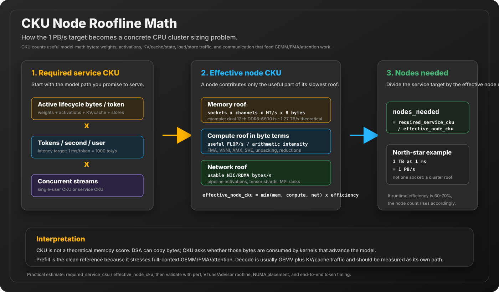

CKE Throughput Unit
The 1 PB/s North-Star Unit
C-Kernel-Engine cares about a practical systems question: how fast can the cumulative compute system cycle active model data to produce tokens? FLOPS and TOPS are useful hardware numbers, but they do not directly answer whether a real model can move its weights, activations, KV cache, intermediate buffers, and network payloads quickly enough to generate the next token.
The proposed CKE unit is aggregate bytes cycled per second across the full token path. The north-star target is 1 petabyte/sec, which is the same as 1000 terabytes/sec, or 1 terabyte every millisecond.
The reference CKU is useful model-math byte throughput, not a copy-bandwidth score. A DSA engine can move bytes, but CKU asks whether active weights, activations, and cache/state are fed through GEMM/FMA/attention work to advance the model. The clean upper-bound reference is full-context prefill, where active weights are cycled through mostly GEMM. Decode is a related but different path: mostly GEMV plus KV/cache reads and writes.

The Unit
CKU = active_bytes_per_token / seconds_per_tokenCKU means C-Kernel throughput unit. The unit is not just DRAM bandwidth from one socket and it is not just matrix FLOPS. It is an end-to-end systems rate: how many bytes the runtime must touch, transform, cache, transmit, or reuse through useful model compute in order to produce tokens. Plain copies are not enough; the bytes have to arrive in the right layout at the right kernel and participate in the model's math. Depending on the model and phase, that can include:
- active weights read for the token path
- activation buffers and scratch buffers
- KV cache reads and writes, or recurrent state updates for SSM-style models
- prefill token blocks, decode token steps, and batching effects
- NUMA traffic, cache movement, and inter-node communication
- quantized layout conversion, repacking, and dequantization overhead
Not Just Weights
A common shortcut is to say, "a 1 TB model at 1 ms/token needs 1 PB/s." That is a useful intuition, but it is not the full CKU definition. CKU is not only parameter bytes divided by token time. It is the active byte path divided by token time. The active byte path includes both the model data being read and the runtime data being produced, consumed, stored, and moved while the token is generated.
In decode, weights are often the streaming bottleneck because many layers repeatedly read projection and MLP weights for each new token. In prefill, long prompts can make activation and KV/cache writes matter much more because the system processes many token rows at once. In training, activation saves, gradient writes, optimizer state, and backward reads all become part of the active path. In distributed execution, activation transfers, KV/state movement, gradient exchange, and pipeline bubbles must be counted too.
This distinction matters because two runs with the same stored model size can have very different CKU. A dense 1 GB model may touch nearly all weights on every decode token. A sparse MoE model may store far more total weights but only touch selected experts. A vision-language prefill run may move less weight than expected but spend heavily on image-token activations and bridge buffers. CKU asks what the system actually had to cycle for this token path.
Why 1 PB/s?
A very large modern model can easily imply hundreds of gigabytes to terabytes of active weight and state movement across the token path, especially before accounting for prefill, KV cache, MoE routing, recurrent state, or distributed execution. Quantization and MoE reduce the active bytes touched per token, but the optimization problem remains the same: the faster the system can cycle the active bytes, the faster it can produce useful output.
| Active bytes per token | Token latency | Required aggregate rate | Implied token rate |
|---|---|---|---|
| 1 TB | 1 second | 1 TB/s | 1 token/sec |
| 1 TB | 10 ms | 100 TB/s | 100 tokens/sec |
| 1 TB | 1 ms | 1 PB/s | 1000 tokens/sec |
| 100 GB | 1 ms | 100 TB/s | 1000 tokens/sec |
This is why the 1 PB/s unit matters. It turns a vague performance goal into a concrete systems target: if the active token path is one terabyte and the target is one millisecond per token, the cumulative runtime has to behave like a one-petabyte-per-second machine. That machine does not have to be one CPU. It can be a coordinated set of CPU sockets, memory channels, NUMA domains, and Linux nodes.
In CKE, this is intentionally anchored to the hardest clean reference: full-context prefill over the active model path. Prefill is mostly GEMM-shaped work over many token rows, so the system must stream active weights, reuse activations, execute reductions, and write the next layer state at high rate. Decode is measured too, but it is usually a different shape: mostly GEMV over one or a few token rows, plus KV/cache reads and writes. That is why CKU should report the phase and workload shape, not only the headline byte rate.
What Counts as Active Bytes?
Active bytes are the bytes that matter for the current token path. They are not the total size of every file on disk and they are not necessarily the total parameter count of the model. For a dense model, the active path may touch most weights every token. For a Mixture-of-Experts model, only the selected experts are active. For recurrent or SSM-style models, the KV-cache term may shrink or disappear for many layers, but recurrent state updates still count.
This makes CKU useful across model families. A 5 TB model with quantization, MoE routing, and sparse activation may have a much smaller active-byte path per token than its full stored footprint. CKE cares about the measured active path: which weights are actually read, which activations are produced, which cache/state buffers are updated, and which bytes cross sockets or nodes.
Lifecycle Envelope and Concurrency
CKU is first a single-stream lifecycle unit. It asks what the runtime must cycle for one model instance serving one token path at the model's intended operating envelope. If a model advertises a 1 million token context length with an 8K embedding dimension, the lifecycle envelope should include the memory behavior needed to support that context: the active weights, the full KV/cache or recurrent state footprint, the activations needed by prefill/decode, and the load/store traffic required to keep the token path moving.
That does not mean every CKU number automatically includes every concurrent user. Concurrency is a separate service-level multiplier. A single-user CKU report answers, "Can this system run one full-context model stream at this token rate?" A service report then asks, "How many such streams can the cluster run at the same time, and what token rate does each user receive?"
single_user_cku = active_lifecycle_bytes_per_token / seconds_per_token
service_cku = single_user_cku * concurrent_streams
per_user_rate = total_generated_tokens_per_second / concurrent_streamsFor example, a cluster might target 1 token/sec for 1000 concurrent users on a very large model. That is a different operating point from 1000 tokens/sec for one user, even if both produce 1000 aggregate tokens/sec. CKU should make both cases explicit: the active lifecycle bytes per user, the concurrency count, the total aggregate byte rate, and the per-user token rate.
| Byte class | Examples | When it dominates |
|---|---|---|
| Weights | Q/K/V projections, MLP gate/up/down, expert weights, output head | Decode and small-batch inference, especially dense models |
| Activations | Layer inputs/outputs, normalized streams, Q8 views, fused scratch | Prefill, vision/audio encoders, large token blocks, unfused paths |
| Cache and state | KV cache reads/writes, recurrent state, Mamba/DeltaNet state | Long context, recurrent models, decode with large history |
| Training state | Saved activations, gradients, optimizer moments, checkpoints | Backward pass, fine-tuning, long-context training |
| Communication | Pipeline activations, tensor-parallel shards, MPI/RDMA transfers | Multi-node inference/training and CPU clusters |
Node Roofline Math
CKU is not only a memory-bandwidth number and it is not only a FLOPS number. A CPU node can only contribute the useful part of the slowest roof: memory bandwidth, compute throughput, or network movement when the run is distributed. This is why CKU belongs next to roofline analysis.

required_service_cku =
active_lifecycle_bytes_per_token
* tokens_per_second_per_user
* concurrent_streams
node_memory_roof =
sockets
* memory_channels_per_socket
* transfer_rate_MTps
* 8 bytes_per_channel_transfer
node_compute_roof_bytes =
useful_flops_per_second / arithmetic_intensity_flops_per_byte
effective_node_cku =
min(node_memory_roof, node_compute_roof_bytes, node_network_roof)
* runtime_efficiency
nodes_needed =
required_service_cku / effective_node_cku
For DDR memory, a practical first-pass estimate is:
channel_GBps = MT/s * 8 bytes / 1000.
DDR5-6600 is about 52.8 GB/s per channel.
A 12-channel socket is therefore about 633.6 GB/s theoretical, and a
dual-socket system is about 1.27 TB/s theoretical before NUMA effects,
memory-controller efficiency, page placement, and OS noise.
At 8800 MT/s, the same 12-channel socket is about 844.8 GB/s, or about
1.69 TB/s for two sockets.
Compute has its own roof. For an AVX-512 FP32 FMA path, a rough dense-core
estimate is:
cores * GHz * FMA_units_per_core * lanes_per_vector * 2 FLOPs_per_FMA.
That estimate changes for BF16, INT8, AMX tile paths, VNNI, SVE, or Neon.
Quantized Q4/Q6 kernels are often limited by unpacking, metadata,
reductions, cache reuse, and memory traffic, so AMX is not automatically the
answer. In many CKE paths, AVX-512/VNNI-style layout work is the more direct
lever.
This also keeps the 1 PB/s north star honest. If a dual-socket CPU node can deliver 1.2 TB/s of useful lifecycle movement, then 1 PB/s requires roughly 833 such nodes in the perfect case. At 60-70% useful efficiency, the number is closer to 1200-1400 nodes. If quantization, MoE routing, locality, and cache reuse reduce the active path to 100 GB/token at 100 tokens/sec, the requirement becomes 10 TB/s, which is a very different cluster shape.
The CPU thesis is not that one socket beats an H100 at dense tensor math. The thesis is that commodity capacity, many memory channels, many physical cores, SIMD/matrix units, Linux tuning, MPI/RDMA placement, and generated C scheduling can combine into a measurable aggregate byte machine. GPUs can also reach enormous aggregate bandwidth, but a 1 TB resident model may need many expensive HBM devices just for capacity before it even starts serving traffic.
Memory Placement Is a Scheduling Problem
Capacity and throughput cannot be separated from placement. Accelerator systems often move selected activations, parameters, or optimizer state from scarce HBM into host DRAM. CPU-native execution removes that specific host-to-device boundary for CPU-resident state, but it does not remove data movement. Cache fills, DRAM traffic, NUMA hops, network transfers, and storage reads still have to be placed and scheduled against useful work.
NVIDIA's JAX host-offloading study provides a useful measured example. On its DeepSeek-V3 671B configuration, optimized activation offloading with a latency-hiding scheduler and pipelined copies reached 908.2 TFLOPs/s/device, compared with 578.3 TFLOPs/s/device for no offload with activation rematerialization. But host offloading without those scheduling mechanisms reached only 541.6 TFLOPs/s/device. The placement policy created capacity; overlap determined whether that capacity translated into throughput.
The same study reported a smaller but equally important result for Llama 3.1 405B: QKV offloading with latency hiding improved throughput by 2.9%, while disabling latency hiding made the offloaded run slower than the no-offload baseline. The 70.9 GiB host allocation represented QKV storage across all layers, while scan-based backward execution needed only one layer's QKV activations resident on the GPU at a time. This is a lifetime and scheduling result, not a raw bandwidth claim.
CKE should apply the same discipline to CPU nodes and clusters:
- Place by lifetime: keep the active layer, tile, KV/state window, or optimizer shard near the compute that consumes it.
- Overlap explicitly: prefetch the next tile or shard while the current kernel performs useful work.
- Budget staging memory: double buffers and prefetched data consume capacity even when they improve throughput.
- Measure exposed transfer time: a transfer hidden behind compute and the same transfer on the critical path have different performance consequences.
- Keep rematerialization in the comparison: recomputing an activation may cost less than moving it, depending on arithmetic intensity and topology.
effective_step_time =
useful_compute_time
+ exposed_memory_time
+ exposed_network_time
+ synchronization_time
staging_capacity = resident_working_set + prefetched_buffers + in_flight_outputsThis refines the CKU interpretation. Logical active bytes describe the model state needed by the operation. Physical bytes include every movement required by the chosen placement plan. A valid CKU report must state what was resident, what was transferred or rematerialized, how much transfer was overlapped, and which movement remained on the critical path.
Reference: NVIDIA, Reducing High-Bandwidth Memory Bottlenecks in JAX-Based LLM Training with Host Offloading.
What CKE Optimizes
CKE does not optimize a single number in isolation. It tries to organize the whole token path so useful bytes stay close to useful compute:
- Kernel layout: Q4/Q5/Q6/Q8 formats, packed layouts, SIMD-friendly loops, and shape-gated dispatch.
- Memory layout: contiguous bump files, planned activation buffers, cache-aligned sections, and deterministic offsets.
- Runtime scheduling: prefill vs decode kernels, persistent thread pools, batching, lifetime-aware placement, asynchronous prefetch, and pipeline staging.
- Linux tuning: CPU affinity, huge pages, NUMA placement, cache behavior, and perf/VTune/Advisor measurement.
- Cluster scaling: model/layer ownership, activation movement, gradient movement, MPI/RDMA paths, and topology-aware placement.
How to Measure It
CKU is meant to be measured, not asserted. A practical report should show the model, phase, context length, batch size, active-byte estimate, token latency, and the resulting aggregate rate. The same run should also show CPU utilization, memory bandwidth, cache behavior, and network transfer if the run spans nodes.
active_bytes_per_token = weights_read_or_reused
+ activations_read_written
+ cache_or_state_read_written
+ scratch_and_layout_traffic
+ communication_read_written
seconds_per_token = measured_wall_time / generated_tokens
CKU = active_bytes_per_token / seconds_per_tokenA stricter report can also split logical active bytes from physical traffic. Logical active bytes describe the model/runtime tensors that participate in the token path. Physical traffic includes cache-line rereads, layout conversion, write-allocate behavior, NUMA hops, and network retransfers. CKE tracks the logical path first, then uses perf, VTune, Advisor, and benchmark counters to find where physical traffic is higher than it should be.
This is the reason CKE keeps investing in visualizers, memory layouts, kernel maps, perf counters, VTune/Advisor profiles, and future MPI lanes. The generated C code is only one part of the system. The larger optimization problem is arranging the full data path so the machine spends less time waiting for bytes and more time turning those bytes into useful output.
Not a FLOPS Replacement
FLOPS still matter. Matrix units still matter. SIMD still matters. But for LLM inference and training, raw arithmetic throughput is only useful when the data reaches the execution units at the right time and in the right layout. CKU is a complementary metric: it asks whether the whole system can cycle the bytes that the model actually needs.
A single workstation is not expected to cycle 1 PB/s today. The point is to make the long-horizon optimization problem explicit: organize CPU kernels, memory hierarchy, Linux scheduling, and distributed nodes so aggregate active-byte throughput keeps rising.